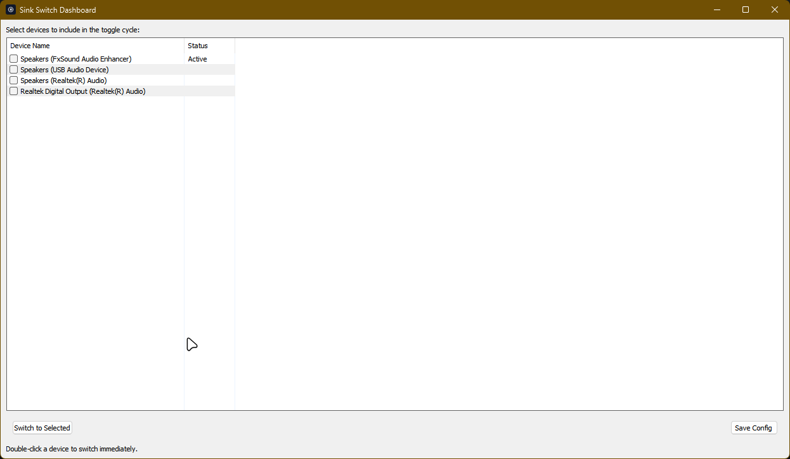

Using Dashboard
The Sink-Switch dashboard provides a visual way to manage your audio devices without touching the terminal.
Interface Overview

Device List
All connected audio outputs are listed in the main panel. The active device is highlighted with a primary color border.
Switching Devices
Simply click on any device card to make it the default system output. Sink-Switch will automatically move all active audio streams (Spotify, Browser, Discord) to that device.
Volume Control
Each device card has a dedicated volume slider. These sliders update in real-time and are remembered by the system even when the device is disconnected and reconnected.
System Tray
On both Linux and Windows, Sink-Switch lives in your system tray. Right-click the icon to:
- Quick switch between Primary/Secondary devices.
- Open full Dashboard.
- Refresh device list.
- Exit application.